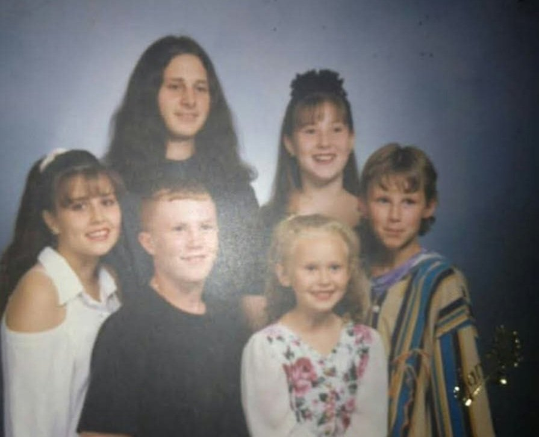

1957 · age 0 Born, Cincinnati, Hamilton County, Ohio FAMILY ACCOUNT
Life Story
Victoria, called Vicki, is the eldest child of Homer William Brewster Jr. and Judith Mae Palmer, born in 1957 in Cincinnati {SUP}.
On Geni she is shown as Victoria Wagner (Brewster), widow of Jimmy Henry and Rob Wagner {SUP}. She is the source, in the family telling, of the full story of her parents' elopement {FAM}.
Photo Gallery
Living family members are left out of public photos.
Vicki, young, on a beach

Vicki's kids with Ron's kids
Sources and Evidence
Homer William Brewster Jr. × Judith Mae Palmer couple profile Doc — Children list and Memories & Life FAMILY ACCOUNT
Geni profile, read via Rick's logged-in Geni tree 2026-11-02 — parents/spouse verified from parent children links SUPPORTED
Geni, read-only 2026-11-02: Victoria Wagner (Brewster), 6000000150643361192 — b. 1957 Cincinnati, daughter of Homer Jr. × Judy, widow of Jimmy Henry and Rob Wagner SUPPORTED
Grades: DOCUMENTED an original record says it · SUPPORTED several records point to it · FAMILY ACCOUNT the family's own telling · UNPROVED a lead, not proved.
Research Notes and Open Questions
Geni/Ancestry/FamilySearch/WikiTree IDs for Vicki were NOT found in public web search and are NOT in the parents' profile Doc — left blank, not invented.
Geni verified 2026-11-02, read-only: Victoria Wagner (Brewster), 6000000150643361192, b. 1957 Cincinnati, widow of Jimmy Henry and Rob Wagner. Birthplace and husband names corrected from the earlier draft (previously unknown).
Photos: Vicki on a beach (sent by Rick 2026-10-29, placed in Homer × Judy profile) and Vicki's kids with Ron's kids.